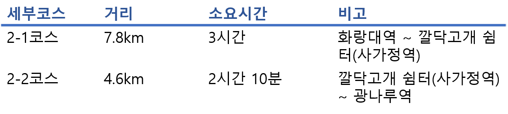
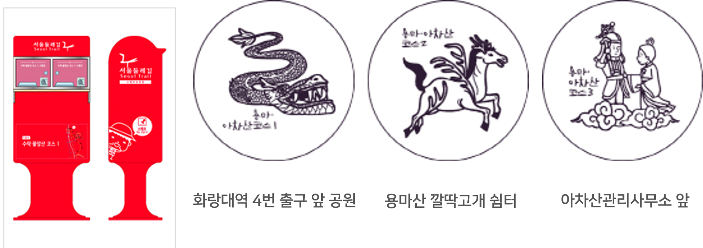

2코스-용마·아차산코스
2코스-용마·아차산코스 광진구,중랑구 12.4km 5시간 10분 중급
세부코스정보
서울 둘레길의 2코스로 묵동천, 망우산, 용마산, 아차산을 통과하는 코스이다. 산 능선을 따라 산책하는 코스로 서울 둘레길 중 전망이 가장 뛰어난 코스이며, 용마산과 아차산은 정비가 잘되어있는 편안한 트래킹이 가능하다. 특히 아차산은 정비가 잘 되어 있을 뿐만이 아니라 아차산보루 등 역사, 문화자원이 풍부하다. 또한 아차산 생태공원으로 인해 볼거리가 다양하다는 특성이 있다.

교통편
출발지 : 지하철 6호선 화랑대역 4번 출입구
진입로 : 지하철 중앙선 양원역 2번 출입구
도착지 : 지하철 5호선 광나루역 1번 출입구
세부코스
화랑대역~묵동천~중랑캠핑숲~망우산~용마산~아차산~광나루역
관광포인트
- 독립운동가들과 방정환, 이중섭, 박인환 등 17인의 유명 인사가 잠들어 있는 '망우묘지공원'
- 아차산의 역사와 문화유적을 볼 수 있는 '아차산 역사문화홍보관'
- 삼국시대의 유적으로 추정되는 소형 석축산성 '아차산 4보루 성터'
여행자 정보
- 지하철 6호선 화랑대역 4번 출구
- 아차산 생태공원을 지나 광나루역으로 가는 길에 마을 담장에 벽화와 아기자기한 가게들이 있음
- 해맞이 광장에서 매년 1월 1일 일출을 보기 좋으며, 다채로운 축제가 매년 열리고 있음
- 서울둘레길안내센터에서 완주증을 받을 수 있음
* 도보인증안내 : http://gil.seoul.go.kr/walk/main.jsp
스탬프 정보

주요 지점 및 추천 장소
서울특별시에서 공원녹지확충 5개년 계획에 따라 조성된 아차산생태공원은 시민과 학생들에게 자연을 접할 수 있는 기회와 자연생태계 학습장 및 체험공간을 제공하고 있다.
이용시간 :24시
휴무일 : 연중무휴
아차산생태공원
어린이대공원은 서울 광진구에 위치해 있으며 가족 단위의 휴식공간이다.
동물나라, 놀이동산, 자연나라 등으로 구성되어있다. 다양한 체험과 물놀이를 할 수 있는 수경시설이 있다.
운영 시간 :
05:00 ~ 22:00/
동물원 10:00~17:00
*추천* 어린이 체험 학습
어린이대공원은 서울시 교육청에서 지정한 현장 체험 학습 기관이다. 체험 프로그램은 홈페이지를 통해 예약가능하다.